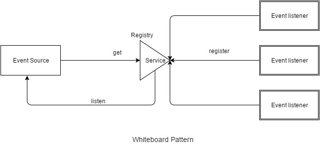
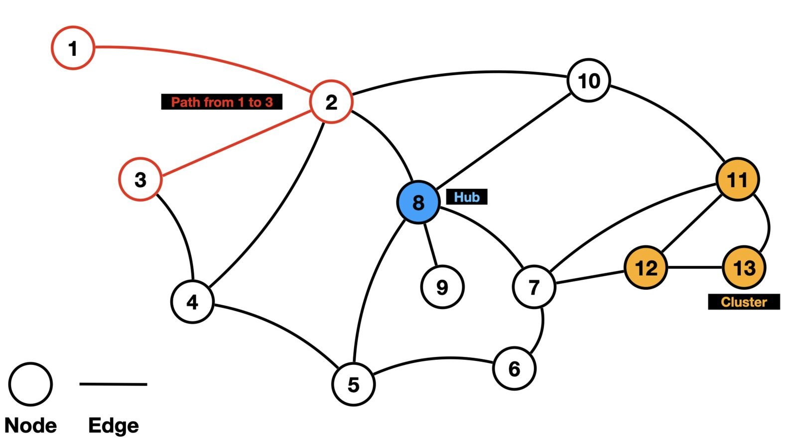

Flexbox
Одновимірний макет і природне перенесення карток.
Для галереї використано шість зображень із Wikimedia Commons із вільними ліцензіями. Файли було зменшено та перетворено у формати JPEG і WebP; авторів, джерела й ліцензії зазначено в підписах і таблиці.

alt уникає повторення підпису.
Повний опис: схема містить 13 пронумерованих вузлів, з'єднаних ребрами. Вузол 8 позначено синім як центральний, вузли 11–13 утворюють помаранчевий кластер, а шлях від вузла 1 до вузла 3 виділено червоним.
alt зображення-посилання описує мету переходу.Flexbox зручний для однієї осі та гнучкого розподілу простору. Grid зручніший, коли одночасно важливі рядки й колонки.
Одновимірний макет і природне перенесення карток.
Двовимірна сітка з незалежним керуванням рядками та колонками.
Для цієї галереї обидва підходи працюють, але Flexbox краще демонструє розподіл вільного простору.
SVG залишається чітким при збільшенні, бо складається з математично описаних фігур. Колір похилої риски вручну змінено атрибутом stroke="#15803d".
Ролик триває 12 секунд, має постер, два треки субтитрів і завантажує лише метадані до запуску.
| Формат | Розмір | Висновок |
|---|---|---|
| JPEG, оригінал | 319 КБ | Висока роздільна здатність, але завеликий для сторінки. |
| JPEG, оптимізований | 140 КБ | Надійний резервний формат. |
| WebP, оптимізований | 61 КБ | Менший файл за близької візуальної якості. |
| Файл | Автор | Ліцензія | Розмір оригіналу |
|---|---|---|---|
| Backlit keyboard | Colin | CC BY-SA 4.0 | 319 КБ |
| Programming code | Bloxgros / Martin Vorel | CC BY-SA 4.0 | 811 КБ |
| Whiteboard Pattern Architecture | Asinsinwal | CC BY-SA 4.0 | 16 КБ |
| Technician at NERSC | Derrick Coetzee | CC0 1.0 | 460 КБ |
| NetworkGraph | Logan Essex | CC BY-SA 4.0 | 307 КБ |
| Programmers | Lbronn | CC BY-SA 4.0 | 471 КБ |
| Тип | Рекомендація |
|---|---|
| Декоративне | Залишити alt="". |
| Фото | Стисло передати важливий зміст у контексті сторінки. |
| Схема | Дати короткий alt і докладний текст поруч. |
| Діаграма | Описати висновок та надати числові дані текстом або таблицею. |
| Логотип | Указати назву організації, якщо вона не написана поруч. |
| Іконка-кнопка | Назвати дію, наприклад «Відкрити меню». |
| Зображення-посилання | Описати мету переходу, а не зовнішність картинки. |